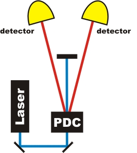
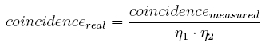

Coincidence
Simultaneous detection of two photons by separate detectors within a given timeframe (2ns) is called coincidence. Since coincidences are fundamental to all experiments described on our web page, we explain this method in detail with screen experiments.
Coincidence with single events
The PDC crystal converts pump photons at 405nm into a pair of photons at 810nm. Both photons are emitted on a cone of 3° opening with respect to the pump beam. Both PDC photons vary in wavelength, but the sum of the frequency is always the frequency of the pump photon. The spectral bandwidth and emission cone is determined by special properties of the PDC crystal (phase matching condition). Let us now do the experiment and detect the two photons (Picture 1). How often should both detectors register the photon pair? You can test your supposition. Do you have an explanation for the detection events? If you need to install Flash-Player (Version 9 - Freeware), you can [Download].

Picture 1: Set-up of the experiment
Explanation:
Based on the theory we would expect coincidences exclusively. However, in reality the detectors respond individually most of the time. This is caused by various sources of losses. We indeed know that PDC generates photon pairs, but often one or both photons are absorbed by optical components between the detector and the source, for example by obstacles due to imperfect coupling into the optical fibre. Additionally, only 50% of the photons yield a detector signal at all and some detector signals occur due to thermal noise rather than photon detection.
In our experiment, 23 % of signals of an individual detector are occurring within coincidences, i.e. three forth of the photons are lost due to one of the mechanisms discussed above. One can calculate the rate of generated photon pairs from the measured coincidence rate and the efficiency η (η = coincidences /singles) [Kly81]:.
In our case ca. 7800 coincidences per second are measured, the efficiency is 23% both. With the formula you can calculate back to 147.000 generated photon pairs in a second.
Coincidence with continous events
You can do the same experiment with continuous events in the following interactive experiment. Additionally it is possible to change the pump polarisation of the pump-beam with the two grey buttons at the waveplate in front of the crystal. Does the parametric fluorescence process depend on the polarisation of the pump light? At the beginning of the experiment the polarisation of the pump light is horizontal (0°). You can change the polarization to vertical (90°)
Explanation:
With the continous measurement in the coincidence setup you can see the efficiency of the process at once. The parametric fluorescence process depends on the polarisation of the pump beam (nonlinear birefringent crystal). At vertical polarisation of the pump beam there should be 0 coincidence counts per second. But the optical components aren't perfect. The polarisation in front of the crystal has to be changed to generate entangled photons in two crystals.
Datas from experiment: single-events, continous events
Author: P. Bronner, April 2008